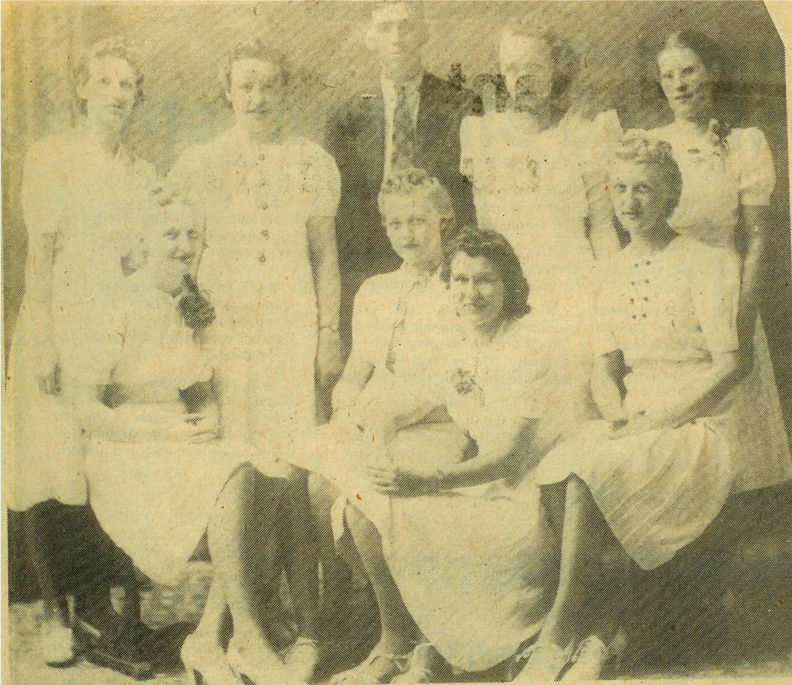
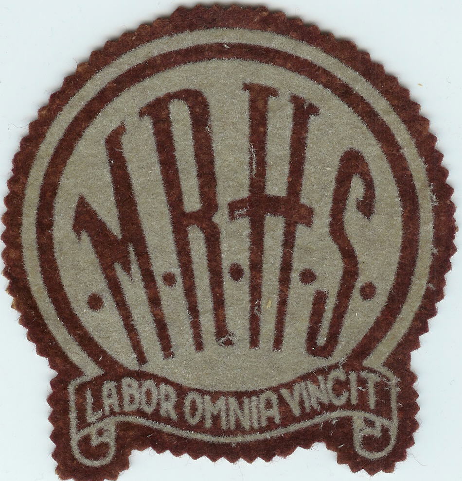

The Family Chronicle
No. 81 October 13, 2004
____________________________________________________________________

Above is a photo of the first graduating class at the Miramichi Rural High School in June 1940. Back row, left to right: Ivy Kingston, Anna Williston, Peter Kingston, Evelyn Chapman and Catherine MacLean. Front row: Emily Smith, Alvena Smith, Opal Fraser and Marion Smith. Graduates would have commenced studies at St. John’s Anglican Church in Bay du Vin
Mary C. Godfrey was married to William Williston; she taught at the Little Branch for, as I recall, three years and, as I recall, was my first teacher; she may even have been my teacher for my first two or three years. She was not married when teaching at Little
Branch. She boarded with Uncle Jim and Aunt Kate Watling and, I recall, Billy came courting and often played the fiddle. On occasion, George and I would go to the basement and listen to Billy playing. If my memory serves me right, I recall her as a good teacher but a strict one.
Mushrooms
While at the cottage earlier today, I picked a beautiful large mushroom. Since then I’ve peeled it and fried it in lots of butter. Was it ever delicious?
I am reminded of picking mushrooms when I was a youngster. For some reason, I recall picking them on the way home from taking the cows to the Finno” field – the one at Finno’s turn. At that time the land on the back side of the road was an open, un-cultivated field. It was a good place to find mushrooms. Seems to me that Dad always checked to see that we had not brought toadstools – then Mum fried them.
I think that the one I just ate was a mushroom. However, if you do not receive this letter, you will know otherwise.

Miramichi Rural High School crest. “Labor Omnia Vincit” means ”Labour Conquers All” or “Labour Overcomes All Difficulties” The Miramichi Rural High School commenced classes in January, 1940 and was officially opened later that year.
This note was triggered by some reflections of Donald Edge.
Young boys wore short pants. My earliest recollections are of two-piece summer suits in white or yellow that my sister Grace brought home from Boston. Nothing doing, in the middle of the night I was wakened to try on these new summer outfits. The tops and bottoms were held together by buttons.
Bib overalls come next with the pocket in the bib and slot to hold a pencil. I wanted jeans without bibs but probably got them as a teenager or nearly so. My first long pants, as I recall, were purchased for Dad’s funeral (1938). As I recall, there was some discussion at the time as to whether I should have short pants or long pants. They were purchased at Sadler’s in Chatham
As youngsters, we went barefoot all summer. I can still remember one episode where I split my big toe when I struck a “stump” in the lane. (I think it was a gatepost that had been replaced but not completely removed. (Getting us to wash our feet before we went to bed was always a struggle.)Presumably we wore shoes to church although I cannot recall. When we graduated to work boots, we had knitted woolen socks – summer and winter. I cannot ever remember having sneakers. (To be continued)
The Chronicle is an occasional newsletter published by Don Glendenning and posted on the family website3. It is intended to share information about my family, community and the times in which I grew up. While every effort is made to be accurate, errors are likely to occur. Comments, enquiries and information may be sent to 62 Queen Elizabeth Drive, Charlottetown, PEI, C1A 3A9. Tel:902 892 5859. Email: dglende@auracom.com Web: www.glendenning.net